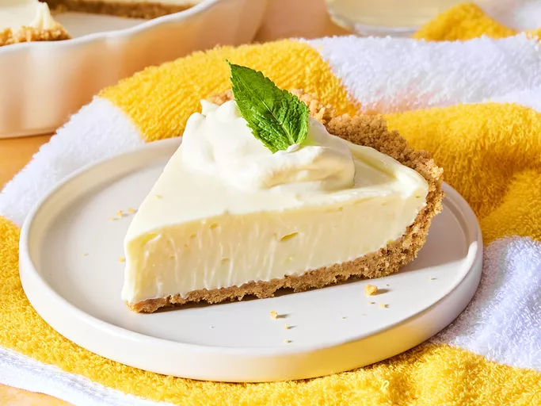

Lemon Icebox Pie

Description
A creamy and tangy lemon icebox pie that's perfect for warm weather.
Ingredients
- 1 pre-made graham cracker crust
- 1 can (14 oz) sweetened condensed milk
- 1/2 cup fresh lemon juice
- 1 tablespoon lemon zest
- 3 large egg yolks
- Whipped cream for topping (optional)
Instructions
- Preheat your oven to 350°F (175°C).
- In a mixing bowl, whisk together the sweetened condensed milk, lemon juice, lemon zest, and egg yolks until smooth.
- Pour the mixture into the graham cracker crust.
- Bake in the preheated oven for about 15 minutes, or until set.
- Let it cool to room temperature, then refrigerate for at least 3 hours before serving.
- Top with whipped cream if desired before serving.